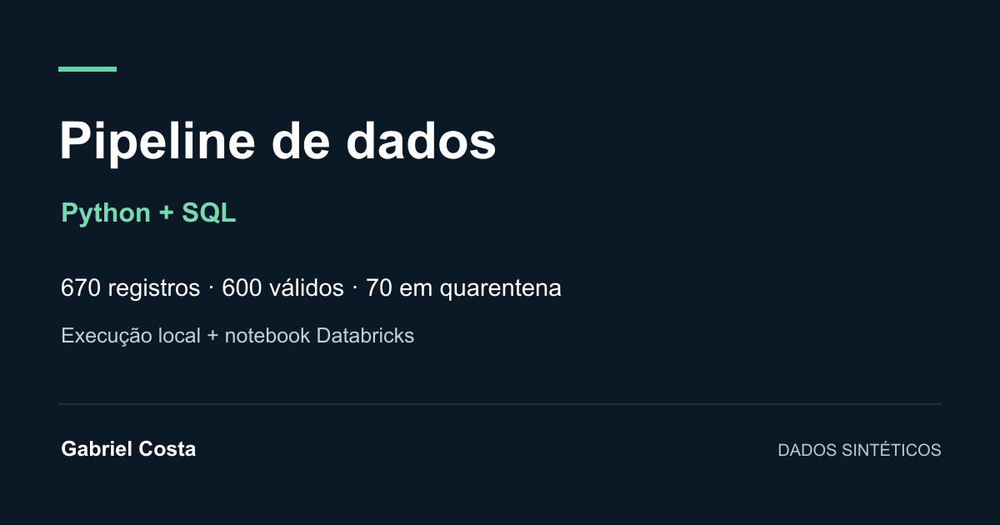

01 / ENGENHARIA DE DADOS
Pipeline e arquitetura Lakehouse
Um fluxo de ingestão que valida registros, separa inconsistências e produz camadas analíticas. Inclui implementação Python/SQL e notebook PySpark/Delta executado em CI.
670 registros de demonstração600 aceitos · 70 em quarentena